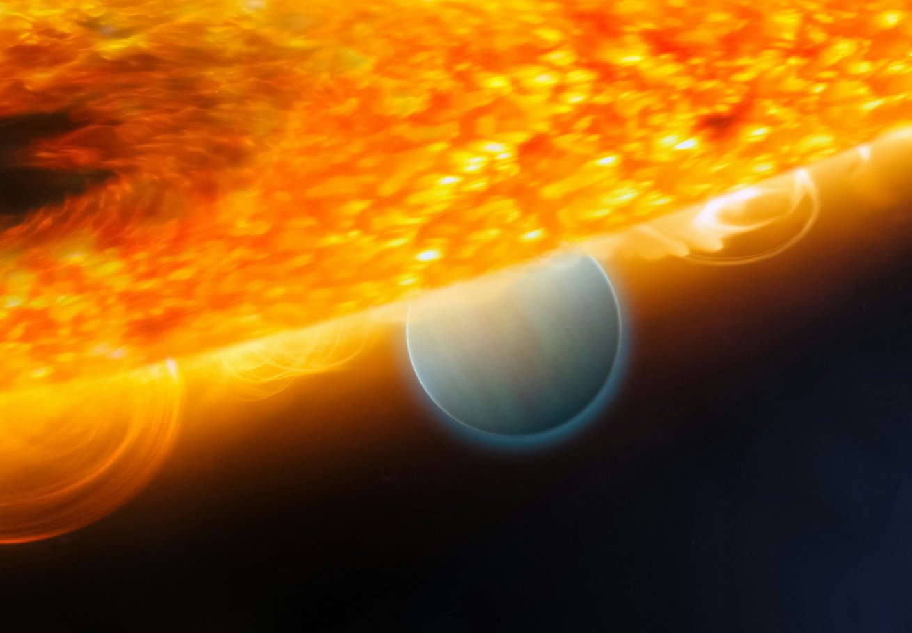
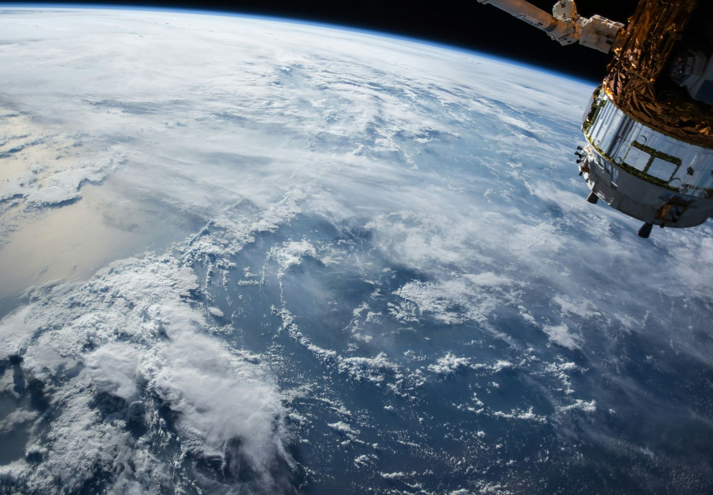
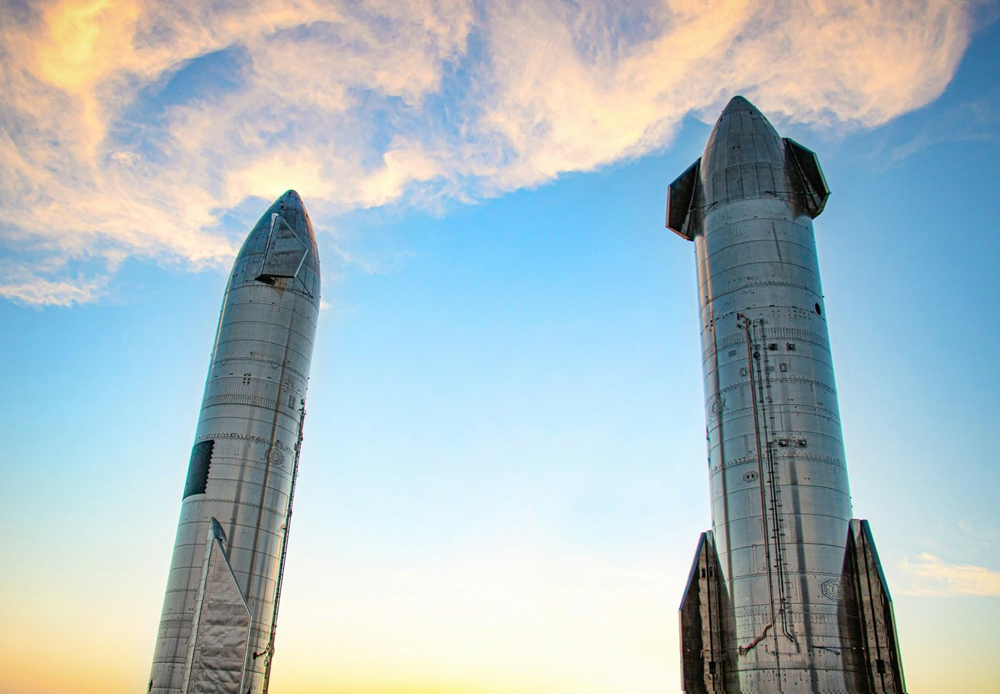
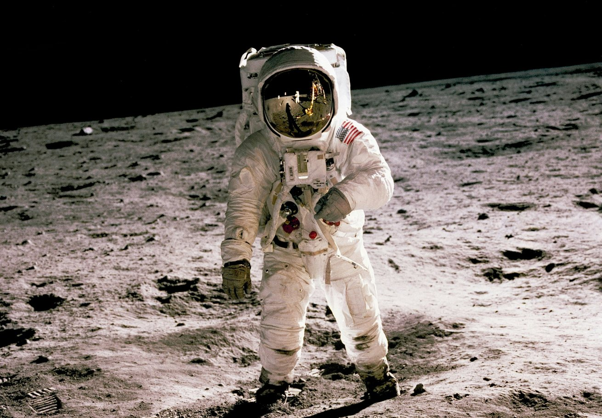

Partner, not competitor
We strengthen the platforms our partners build and operate, without entering their markets or competing with them.
We don’t build orbital data centers. We enable the companies that do.
Keep scrolling to learn more about how we revolutionize the space.
Core Space works alongside operators and platform builders, providing the critical systems they need to deploy, scale and operate in orbit.
Partner, not competitor
We strengthen the platforms our partners build and operate, without entering their markets or competing with them.
Designed to integrate and scale
Modular systems designed for existing and next-generation platforms, from deployment to long-term operations.
One connected system, from orbit to ground.
Power.
Generate and transfer power through plasma-based systems.

[TECHNOLOGY UPDATE]
A New Path for Power in Orbit
[INDUSTRY INSIGHT]
Why VLEO Could Become the Missing Data Layer

[ENGINEERING]
Rethinking Cooling for Orbital Compute

[OPERATIONS]
Designing for Weekly Launch Cadence

[RESEARCH]
Station-Keeping at Very Low Altitude
[MISSION]
Carrying Power Beyond Low Earth Orbit